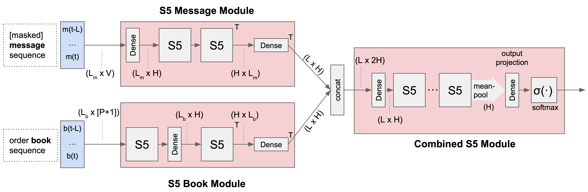
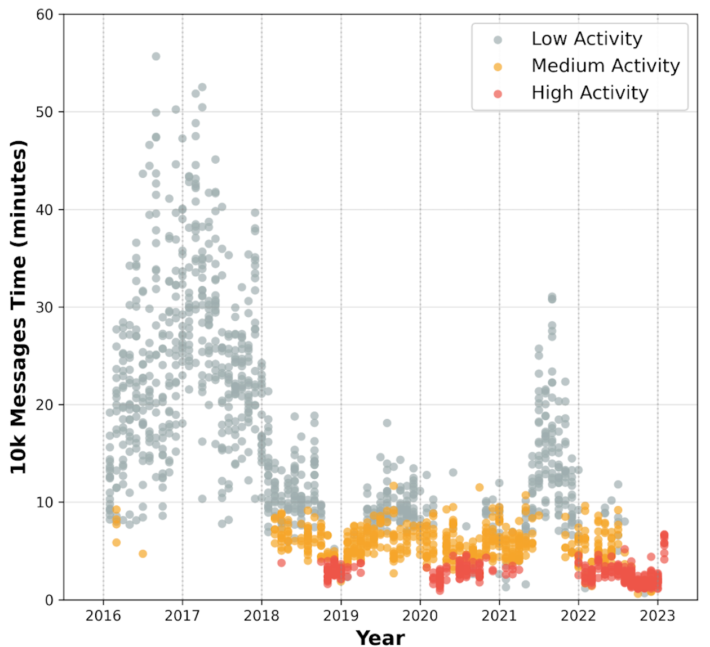
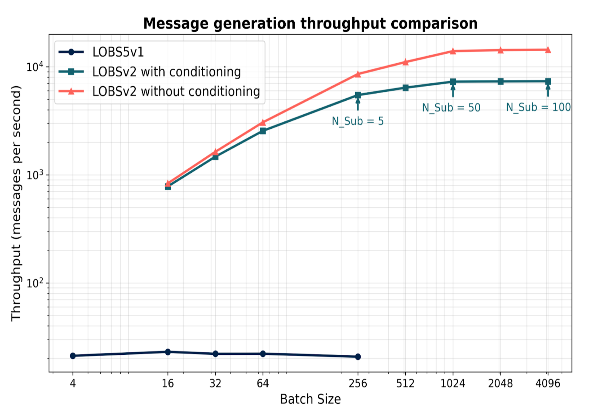
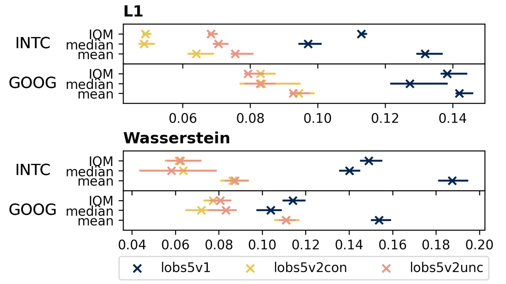
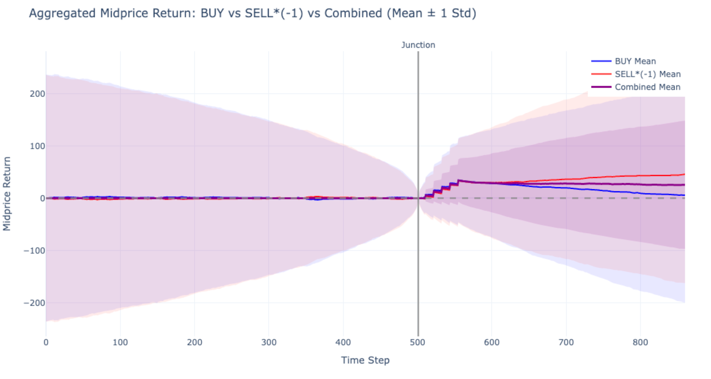
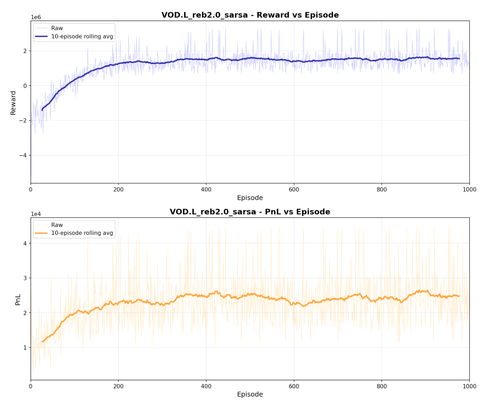
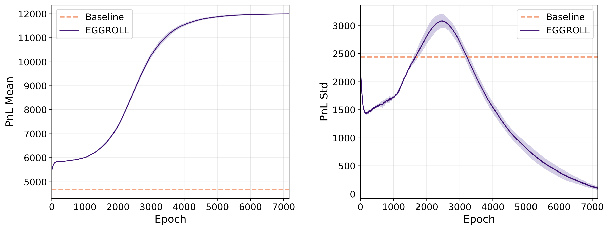
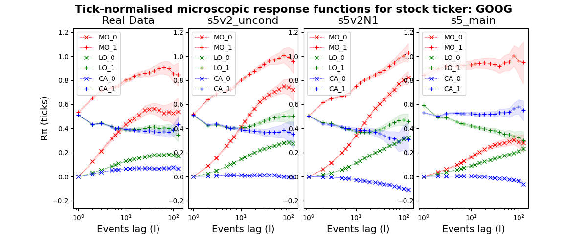

σ0: Unlock the Large Scale Quant Foundation Models
Figure 1. Loss vs. model parameters, trained on 25 billion tokens of NASDAQ order flow. Test loss decreases monotonically from 34M to 617M parameters, following a power-law relationship. The ratio indicates tokens per parameter.
TL;DR: Finance is one of the hardest domains for ML: noisy, fast, strategic. We develop LOBS5, the first state-space foundation model for limit order book data, trained on 25 billion tokens of NASDAQ order flow. Our three-stage pipeline (pre-training, post-training with Discrete Flow Matching, fine-tuning with Evolution Strategies) achieves 155% PnL improvement on order execution and exhibits clear scaling laws from 34M to 2B+ parameters.
We treat quantitative finance as a data science problem. Rather than hand-crafting trading rules or relying on closed-form models, we build AI infrastructure, foundation models, simulators, and evaluation pipelines, and then iterate rapidly through experiments.
The core loop is: build → experiment → measure → iterate. We train models on terabytes of order flow data, run thousands of parallel simulations, compare results quantitatively, and feed insights back into the next iteration. Every design decision is validated empirically, not assumed theoretically.
Because it is science: hypotheses are tested against data, results must be reproducible, and the infrastructure must support fast turnaround from idea to experiment to conclusion. This is why we invest heavily in GPU-accelerated simulation, automated benchmarking (LOB-Bench), and scalable training pipelines, they are the laboratory equipment that makes rapid experimental iteration possible.
A core design principle is to stay true to the data. We discretize every field of an order message into categorical tokens and train with cross-entropy loss, performing general density modeling without assuming any parametric distribution. Regression losses and continuous distribution matching require distributional assumptions (Gaussian, exponential, etc.) that may not hold for financial data. Cross-entropy over discrete tokens is the only approach that models arbitrary distributions faithfully, letting the data speak for itself.
| Name | What it is | Analogy |
|---|---|---|
| σ0 | Model family | Like LLaMA or GPT. A herd of models including pre-trained foundation models and fine-tuned models for downstream tasks (order execution, market making, etc.). The core is the pre-trained foundation model; σ0 is architecture-agnostic and future releases may use Transformers, Mamba, or hybrid architectures. |
| LOBS5 | Architecture | Like Transformer or Mamba. A specific architecture built on S5 (Simplified Structured State Space) layers that replaces attention with linear-time state space recurrences. LOBS5 is the architecture used in the current σ0 release. |
In short: σ0 is what we release, LOBS5 is how it is built.
Why Order Flow?
The stock exchanges (NYSE and NASDAQ) generate massive volumes of high-frequency trading data, with new orders created at the millisecond level. These orders encapsulate a wealth of insights: the tendencies and preferences of various market participants, underlying market information, and the correlations between different stocks.
Our core objective is to train a foundation model on this terabyte-scale dataset, enabling it to learn the transition dynamics of limit order books. The pipeline has three distinct stages: pre-training learns the data distribution via next-token prediction, post-training (Discrete Flow Matching) improves generation quality by eliminating compound error, and fine-tuning (Evolution Strategies) optimizes for downstream tasks such as order execution. Even a few basis points of improvement in execution can translate to enormous profits when deployed at scale.
At its core, a limit order book is an anonymous multi-agent system. Each market participant submits orders (actions) that modify the shared order book (state). The state transitions are governed by the matching engine (deterministic), but the distribution of future states depends on the collective behavior of all participants, analogous to video frame prediction in computer vision.
LOBS5 captures this state distribution through next-token prediction on order flow tokens. The foundation model learns two fundamental capabilities:
- Mimic historical orders: Generate realistic background market activity as a world model
- Optimize trading policy: Fine-tune an ego agent for downstream tasks using evolution strategies
This enables simulation of dynamic price impact (not static), indirect price impact (not direct), and adversarial selection, where other agents observe and react to the ego agent's behavior, changing their original plans. These phenomena are critical for realistic market simulation but are absent from traditional backtesting frameworks.
LOBS5: Pre-training at Scale
Architecture: S5 State Space Model
LOBS5 is built on the S5 State Space Model, a modern alternative to Transformers that provides linear-time $O(n)$ complexity for sequence modeling, compared to the quadratic $O(n^2)$ cost of self-attention. The choice of S5 is motivated by three factors:
Figure 2. LOBS5 architecture. The S5 Message Module processes masked message sequences, while the S5 Book Module processes order book snapshots. Their outputs are concatenated and fed into the Combined S5 Module, which produces next-token probabilities via mean-pooling and softmax.
- Linear complexity: Efficient processing of long order flow sequences (10,000+ tokens)
- Natural bridge: The state space formulation naturally connects continuous market dynamics with discrete observations
- Memory efficiency: 40–60% lower memory usage compared to Transformers
A key open question is whether LOB modeling requires the full quadratic attention mechanism, or whether linear attention with longer context windows is sufficient. Our scaling results suggest the latter, LOBS5 achieves strong performance with linear complexity, and performance continues to improve with model scale.
Long Context: What Does 10k Orders Mean?
With a TBPTT window of 20 segments (each 512 tokens), LOBS5 processes approximately 10,000 orders per training context. But how much real market time does that represent? The answer depends heavily on market activity:
Figure 3. Wall-clock time spanned by 10k order messages (GOOG, 2016–2023). High-activity periods (red) compress 10k orders into just 2–5 minutes, while low-activity periods (gray) can stretch to 30+ minutes. The secular trend toward higher activity means recent data packs more information per context window.
24-Token Encoding
Each limit order message is discretized into 24 categorical tokens representing:
- Event type: new order, cancellation, execution, etc.
- Direction: buy or sell
- Relative price levels: distance from best bid/ask
- Size digits: order quantity decomposed into individual digits
This encoding enables the application of language modeling techniques (next-token prediction with cross-entropy loss) to financial time series while preserving the semantic meaning of numerical values.
Why Lossless Tokenization?
Alternative approaches such as MarS and LOBERT compress each message into a single token (lossy), producing much shorter sequences (500 tokens vs. our 12,000 for 500 messages). We deliberately choose lossless encoding for two reasons:
1. The simulator requires exact messages. Our full pipeline runs generated messages through the JAX-LOB matching engine, which implements price-time priority matching. This requires exact prices (to determine queue position), exact sizes (to compute partial fills), and exact event types (new order vs. cancellation have completely different logic). Lossy encoding would break the matching engine or produce incorrect trade executions, making the entire fine-tuning loop (RL or EGGROLL) impossible.
2. S5 makes long sequences affordable. For Transformers, 12,000 tokens costs $O(n^2) = 144M$ attention computations, which is why lossy approaches are attractive. But S5 processes sequences in $O(n)$, making the 24× sequence length overhead manageable: our S5 model trains in 2.5 hours per epoch vs. 20 hours for an equivalent Transformer. Lossless encoding is a viable choice precisely because the architecture can handle it.
GPU Efficiency
We achieve approximately 40% Model FLOPs Utilization (MFU) during pre-training, comparable to Meta's Llama-3.1 (38–43%):
| Model Size | MFU | GPU Util % |
|---|---|---|
| 2.17B | 38.4% | 93.4 ± 7.9 |
| 1.95B | 35.3% | 95.6 ± 7.4 |
| 1.86B | 36.3% | 94.2 ± 7.3 |
| 1.4B | 41.7% | 80.7 ± 37.5 |
| 1.0B | 41.3% | 72.9 ± 41.3 |
| 360M | 36.2% | 85.0 ± 33.9 |
All metrics measured on a single node (4× GH200 GPUs).
Throughput
Figure 4. Message generation throughput comparison. LOBSv2 achieves 100–600× throughput improvement over v1, reaching up to 15,000 messages/second.
Generation Quality Across Versions
Successive iterations of LOBS5 show consistent improvement in generation fidelity. Evaluated on both INTC and GOOG order flow, LOBS5v2 (conditional and unconditional) substantially outperforms v1 across L1 and Wasserstein distance metrics, with lower values indicating closer distributional match to real market data:
Figure 4. L1 and Wasserstein distance across LOBS5 versions (v1, v2-conditional, v2-unconditional) on INTC and GOOG. Each version progressively reduces distributional distance, with v2 variants achieving roughly 2× improvement over v1.
Post-training: Discrete Flow Matching
A fundamental limitation of autoregressive (AR) models is compound error accumulation: prediction errors propagate and amplify throughout sequence generation, as each token conditions on potentially incorrect previous outputs. This problem is particularly severe for financial order flow, where distributional shifts compound rapidly over long generation horizons.
To address this, we introduce a post-training stage using Discrete Flow Matching (DFM), which converts our pretrained AR model into a flow-based generator. Unlike DDPM that starts from random noise, our approach leverages the pretrained model's learned distribution as the starting point, significantly reducing the learning burden. Compared to GANs, which we found unstable and only marginally better than baselines on LOB data, DFM trains reliably and consistently converges.
Crucially, DFM does not replace cross-entropy pre-training: CE learns what to generate (the data distribution), while DFM improves how to generate (the sampling procedure).
Simulator
Training and evaluating trading agents requires a fast, faithful market simulator. Our simulator stack has three layers, each adding richer dynamics:
Layer 1: Match Engine: JAX-LOB
At the foundation is JAX-LOB (ICAIF 2023 Best Paper), a fully vectorized limit order book matching engine in JAX. It implements the complete NASDAQ ITCH protocol with price-time priority matching. Given an incoming order and the current book state, the match engine deterministically executes trades and updates the book.
Layer 2: Environment: Historical Replay
Wrapping the match engine with historical order flow replay creates an environment. The agent's orders are interleaved with real historical messages and processed through the match engine. This layer captures direct price impact, when your order consumes liquidity at a price level, that liquidity is gone and cannot be filled again. However, it has a critical limitation: the historical background agents do not react to the ego agent's actions, they replay the same orders regardless of what the agent does.
JaxMARL-HFT (ICAIF 2025 Best Paper) extends this to multi-agent settings, where multiple trading agents interact within the same order book. Both simulators leverage JAX's vmap to run 65,536 parallel environments on a single GPU cluster (2,048 per GPU × 32 GPUs).
Layer 3: World Model Simulator: LOBS5 as Background
The full simulator replaces historical replay with a world model: the frozen pretrained LOBS5 generates background market activity conditioned on the current state, including the ego agent's actions. This unlocks indirect price impact, phenomena that historical replay cannot capture:
- Adversarial selection: Background agents observe the ego agent's orders and change their behavior accordingly. For example, a market maker seeing a large buy order may widen their spread or pull their quotes, exactly the adverse selection that makes real trading difficult
- Dynamic liquidity response: The order book replenishes (or thins out) in response to the ego agent's activity, rather than following a fixed historical script
- Strategic interaction: The world model learns the equilibrium distribution of market responses, providing a far more realistic training signal than static replay
This creates a two-model architecture: the policy model (fine-tuned LOBS5) learns to trade, while the world model (frozen pretrained LOBS5) provides the reactive environment. The policy model must learn strategies that are robust to adversarial selection, not just strategies that work against passive historical data.
Order Injection: Validating Price Impact
To verify that the world model captures realistic price impact, we inject buy or sell market orders at the junction point (step 500) and observe the midprice response:
Figure 7. Aggregated midprice return (mean ± 1 std) after injecting BUY (blue) and SELL*(−1) (red) orders at the junction. The combined mean (purple) shows a clear positive drift post-injection, confirming that the world model produces realistic indirect price impact, background agents respond to the injected orders rather than ignoring them.
Triton Kernel Fusion
The match engine (Layer 1) is the performance bottleneck. Order book matching is inherently sequential: each trade modifies the book state, and the next match depends on the updated state. In JAX, lax.while_loop requires a device-to-host synchronization on every iteration, costing 110–500ms per match despite the entire book fitting in 4.8 KB of SRAM.
We rewrite the matching engine as fused Triton kernels that keep the entire while loop on-GPU:
- Zero D2H overhead: Loop condition evaluated in SRAM, no CPU synchronization needed
- 99% HBM efficiency: Order book data (2.4 KB per side) pinned in shared memory for the entire kernel duration
- Fused operations: Price-time priority search, quantity deduction, trade recording, and empty-slot cleanup, all in a single kernel launch
- Sequential correctness: The kernel preserves exact price-time priority semantics via an in-kernel for-loop
Fine-tuning for Trading
Foundation models must adapt to domain-specific tasks. LOBS5 can be fine-tuned for a range of trading problems: order execution (executing a specified quantity within a time window while minimizing market impact), market making (continuously quoting bid/ask prices to earn the spread while managing inventory risk), and statistical arbitrage (exploiting transient mispricings across correlated instruments). Two fundamentally different optimization paradigms apply:
Approach 1: Reinforcement Learning (First-Order)
Gradient-based fine-tuning via backpropagation: both forward pass and backward pass are required. This includes Inverse Reinforcement Learning (IRL) and standard RL policy gradient methods. Constraints must be expressed as differentiable regularisation terms in the loss function, limiting them to simple mathematical forms (L2 penalties, KL divergence bounds).
This approach is well-suited when the reward signal is differentiable or can be approximated by a learned reward model, but struggles with non-differentiable objectives like realized PnL.
Approach 2: Evolution Strategies (Zeroth-Order)
EGGROLL (Evolution Guided GeneRal Optimisation via Low-rank Learning) converts training into inference: no backpropagation is needed. Instead, the model is evaluated with random noise perturbations $AB^\top$ (LoRA rank-4) on all projection matrices, and the fitness signal (realized PnL) guides the search. This reduces memory from $mn$ to $r(m+n)$ per layer and achieves up to a hundredfold increase in training throughput for billion-parameter models.
Two key advantages over gradient-based methods:
- Arbitrary constraints: Rather than encoding constraints as differentiable loss terms, Evolution Strategies can enforce complex, semantically described constraints (e.g., "never hold more than X shares", "respect exchange rate limits", "maintain inventory within bounds") by simply rejecting or penalising violating rollouts. The constraints do not need to be differentiable.
- Stronger exploration: Each generation samples diverse noise perturbations across the entire parameter space, naturally exploring multiple modes of the fitness landscape. Unlike gradient descent, which concentrates updates around the current mean, ES does not collapse to the nearest local optimum but maintains broad coverage of the solution space.
Results: Order Execution
Approach 1 Result: Reinforcement Learning
Figure 7. RL fine-tuning using SARSA (State-Action-Reward-State-Action, an on-policy temporal-difference method) on VOD.L (Vodafone, London Stock Exchange) order execution. Top: Reward vs. episode, showing convergence from negative to ~1.8M over 1,000 episodes. Bottom: PnL vs. episode, rising from ~1.2×104 to ~2.5×104. Orange/blue lines show 10-episode rolling averages.
Approach 2 Result: EGGROLL
The task is to execute a sell order of Q = 30 shares within a horizon of T = 10 steps. In each episode, the LOB is initialised from a snapshot followed by 10 warm-up background messages. At each step, the population members generate their messages, followed by 50 real background messages processed through the JAX-LOB simulator. Fine-tuning is performed on GOOG order flow from January 2023, applying LoRA (rank 4) on all projection matrices while freezing SSM parameters and layer norms. Performance is measured by realized PnL relative to the initial mid price.
Figure 8. Training curves for order execution with EGGROLL. Left: Mean PnL over 6,500 epochs for baseline (σ=0, orange dashed) and EGGROLL (σ=0.01, blue solid). Right: PnL standard deviation. The initial increase in std corresponds to an exploration phase; the subsequent decrease indicates convergence to a high-performing policy. Shaded regions show interquartile range.
| Metric | Value |
|---|---|
| Model | LOBS5-360M |
| Mean PnL (pretrained baseline) | ~4,700 |
| Mean PnL (EGGROLL fine-tuned) | ~12,000 |
| Improvement | 155% |
| Parallel generations (total) | 65,536 |
| Parallel generations per GPU | 2,048 |
| LoRA rank | 4 |
| σ (noise scale) | 0.01 |
| Learning rate | 0.001 |
| Epochs | 6,500 |
The baseline policy (σ=0, pretrained model without noise perturbation) achieves a mean PnL of approximately 4,700. EGGROLL fine-tuning improves this to around 12,000, a 155% improvement. The PnL standard deviation initially increases to ~3,100 during the first 2,500 epochs (exploration phase), then decreases to ~400 by epoch 6,500, indicating convergence to a concentrated, high-performing policy.
Benchmarking: LOB-Bench
How do we know a generative model is producing realistic order flow? We develop LOB-Bench (ICML 2025), a comprehensive benchmarking suite that evaluates generative LOB models across multiple dimensions:
- Distributional fidelity: L1 and Wasserstein distance on price returns, spread, and queue sizes
- Temporal structure: Inter-arrival time distributions, autocorrelation of order flow
- Market microstructure: Price impact functions, order book shape recovery, volatility clustering
- Cross-model comparison: Standardised evaluation of autoregressive, diffusion, and flow-matching approaches
LOB-Bench provides the first apples-to-apples comparison framework for this domain, enabling reproducible evaluation as models scale.
Market Impact: Square Root Law
A critical test of any order flow model is whether it reproduces the square root law of market impact, a universal empirical regularity where price response to order flow scales as $R_\pi \sim l^{1/2}$ with event lag $l$. We compare microscopic response functions between real GOOG data and three LOBS5 variants:
Figure 5. Tick-normalised microscopic response functions for GOOG. Market orders (MO, red) exhibit the characteristic concave square-root shape, limit orders (LO, green) show negative impact, and cancellations (CA, blue) are near-zero. LOBS5v2 variants closely reproduce the real data patterns, while v1 (s5_main) shows deviations at longer lags.
Scaling to SPY500
Having established scaling laws on single-stock data, the next frontier is training on the full S&P 500 universe. The dataset scales are:
| Dataset | Tokens | Orders |
|---|---|---|
| GOOG 2022 | 8.3B | 1/3B |
| GOOG (all years) | 25B | 1B |
| SPY500 | 3,800B | 152B |
Scaling to the full SPY500 dataset with a 2B parameter model requires an estimated 40,000–160,000 node-hours, derived from our single-stock training profile (16 node-hours/epoch for GOOG 2022), adjusted for the 456× data increase and ~50% multi-node communication efficiency.
A multi-stock foundation model would unlock cross-stock correlation learning, understanding how order flow in one stock influences another, which is critical for portfolio-level applications.
Open Questions
These are unsolved problems we are actively working on. If you have ideas, insights, or preliminary results, we'd love to hear from you. Promising contributions lead to co-authorship on future publications. Click any question to explore the details and leave your thoughts below.
Support This Research
& Grants
8× L40S Server
32× B200 Server
600k H100 GPU hrs
JAX-LOB
LOB-Bench
Diffusion, JaxMARL-HFT
Scaling foundation models for finance requires substantial resources. If you or your organisation can help, we would be grateful for support in any of the following areas:
Compute
| GPU / TPU clusters | Multi-node training (GPU or TPU) |
| Cloud credits | AWS, GCP, Azure, or Lambda |
| API tokens | Anthropic, OpenAI, or other LLM API credits |
Data
| Options markets | Full LOB data (CBOE, CME, Eurex) |
| International equities | Non-US markets (LSE, TSE, SSE, HKEX) |
| Other asset classes | Futures, FX, or crypto at message level |
Funding
| PhD studentships | Sponsorship for doctoral researchers |
| Research grants | Collaborative grants or industry partnerships |
Live Trading
| Model deployment | Deploy LOBS5 to live trading infrastructure |
| Strategy backtesting | Simulation → paper trading → live execution |
Beyond funding and data, we are looking for collaborators who want to contribute directly to the project:
| Media | What we need |
|---|---|
| Graphics & GIFs | Design explanatory diagrams, animated GIFs, and infographics illustrating model architecture, order book mechanics, and experimental results |
| Video production | Create explainer videos for YouTube or TikTok: demos, visualisations of order book dynamics and model behaviour |
| Infrastructure | What we need |
|---|---|
| Trading server setup | Set up servers that simulate real exchange connectivity, including realistic submission latency, network routing, and order queue position effects |
| Low-latency networking | Optimise the order submission pipeline: serialisation, router hops, and co-location simulation for realistic end-to-end latency profiling |
| C/C++ reimplement | Rewrite inference and simulator components in C/C++ for production-grade speed in live trading, replacing current JAX/Python implementations where latency is critical |
| Google TPU support | Port training and inference pipelines to TPU (v4/v5e), including JAX TPU-specific optimizations, multi-pod scaling, and TPU-compatible custom kernels |
Can't solve the Open Questions yet, but want to get involved? We offer hands-on engineering and research experience in the following areas:
| Skill | What you'll work on |
|---|---|
| Mixture of Experts | Native MoE training, expert routing, load balancing, and capacity factors at scale |
| Mixed Precision | FP16/BF16/FP8 training pipelines, loss scaling, and numerical stability for SSMs |
| Triton Kernels | Write custom GPU kernels in Triton for order book operations and model inference |
| Kernel Fusion | Fuse multi-step operations (scan + matmul + activation) into single kernel launches to minimise HBM round-trips |
| Attention Modules | Implement and benchmark attention variants (FlashAttention, linear attention, sliding window) for financial sequences |
| Agentic RL | Reinforcement learning for trading tasks (order execution, market making, statistical arbitrage): reward shaping, policy gradient methods, and environment integration with the simulator stack |
| Flow Matching Post-training | Discrete Flow Matching to convert pretrained autoregressive models into bidirectional generators with reduced compound error |
training on trillions of tokens across thousands of H100 GPUs,
this is the project for you.
Citation
Template adapted from EasyAcademicWebsite.